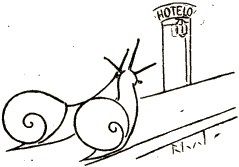

Printempo pulsis tra l' ĝarden',
Petolo tiklis la naturon;
En freŝa roso de l' maten'
Heliko flaris aventuron...
Precize... ĉarma helikin'
Vekiĝis meze de legomo
Kaj scivoleme tiris sin
Kokete el la konka domo.
Ĉu estas io sur la ter'
Pli bela, nobla, eleganta
Ol tiu helikin-aper'?
(Almenaŭ por helik' amanta?)
Pli ol poeto la helik'
Reteni povas siajn sentojn,
Li ne deklame per lirik'
Diskrias ilin sur tegmentojn,
Sed tamen kreskis pli kaj pli
Nun lia kor' kaŭĉuk-elasta
Ĝis kiam lia dom' al li
Subite ŝajnis tro malvasta.
Neeble nun akcepti ŝin
Ĉe li kun ama reciproko,
Ĉar por helik' kaj helikin'
En unu dom' ne estas loko!
Kaj vi mensogis, ho poet',
Per tiu verso kaj deklaro,
Ke... „plej malgranda kabanet'
Sufiĉas al amanta paro ...“
Kruela moko de l' destin',
Ke malgraŭ propra konkkastelo
Heliko nun kaj helikin
Sin treni devis al ... hotelo!
